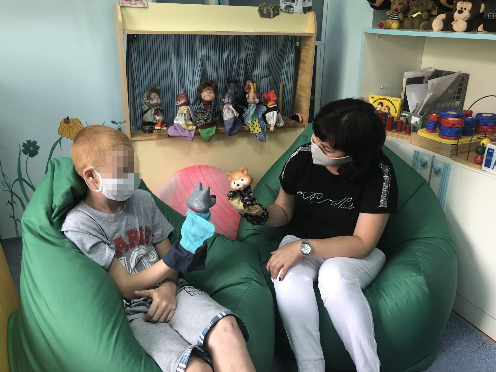

<!DOCTYPE html>
<html lang="ru">
<head>
    <meta charset="UTF-8">
    <meta http-equiv="X-UA-Compatible" content="IE=edge">
    <meta name="viewport" content="width=device-width, initial-scale=1.0">
    <title>Booking</title>
    <link rel="stylesheet" href="html/css/style.css">
</head>
</html>
<!--Шапка сайта-->
<div id="header">
    <h1>КОГКБУЗ
        "Центр психиатрии и психического здоровья им. академика В.М. Бехтерева"</h1>
        <div class="logo"><a href="index.html"> </a></div>
        <ul class="menu">
            <li><a href="booking.html">Услуги</a></li>
            <li><a href="search.html">Запись</a></li>
            <li><a href="seat.html">История больницы</a></li>
        </ul>
</div>
<!--Конец блока-->

<!--Блок услуг-->
<section id="uslugil">
    <p class="usl">Предоставляемые услуги</p>
  <div id="uslo_all">
    <div class="uslo1">
        
        <div class="text_prom">
            <h4>Судебная психиатрия
                </h4>
               <p> Наука, которая служит правосудию, опираясь на достижения общей медицины и обшей психиатрии. 
                Она имеет свои особые задачи, но все они сводятся к двум главным проблемам - 
                установлению вменяемости или невменяемости в делах по уголовным преступлениями и 
                установлению недееспособности или дееспособности в гражданских делах.</p>
                <form action="search.html" method="get">
                    <input type="submit" value="Записаться">
                </form>
        </div>
    </div>           
        <div class="uslo1">
            
            <div class="text_prom">   
                <h4>Медико-психосоциальная реабилитация</h4>   
                    <p>Основные задачи:
                        реабилитация пациентов, находящихся на диспансерном наблюдении;
                        реабилитация пациентов по медико-психосоциальной реабилитации в структуре АМРО;
                    </p>
                 <form action="search.html" method="get">
                    <input type="submit" value="Записаться">
                </form> 
            </div>
        </div>        
        <div class="uslo1">
            
            <div class="text_prom">   
                <h4>Амбулаторная помощь</h4>
                    <p>Деятельность по оказанию первичной специализированной и специализированной медицинской помощи
                         при психических расстройствах и расстройствах поведения 
                        осуществляется по территориальному принципу.</p>
                <form action="search.html" method="get">
                    <input type="submit" value="Записаться">
                </form>       
        </div>
    </div>
</div>  
</section>
<!--Конец-->

<!--Подвал-->
<footer>
    <div id="podval">
        <p class="nomer">+7(8332) 55-70-89 Приемное отделение</p>
    <div class="ac">
        <p>2014—2023 © КОГКБУЗ "Центр психиатрии и психического здоровья им. академика В.М. Бехтерева"</p>
<p1>© Использованы графические изображения проекта icons8.com</p1>
    </div>
    </div>
 </footer>
</html>
<!--Конец блока-->